Runs: yolo-with-stats vs clean-code-with-stats. Data parsed from raw Codex JSONL event logs.
| Metric | YOLO | Clean Code | Clean vs YOLO |
|---|---|---|---|
| Duration | 1,979 s | 2,204 s | +11.4% |
| Events | 611 | 756 | +23.7% |
| Commands | 191 | 233 | +22.0% |
| Failed commands | 6 | 36 | +500.0% |
| File changes | 46 | 61 | +32.6% |
| Agent messages | 107 | 138 | +29.0% |
| Input tokens | 8,089,505 | 9,938,539 | +22.9% |
| Cached input tokens | 7,592,704 | 9,478,400 | +24.8% |
| Effective input tokens | 496,801 | 460,139 | -7.4% |
| Output tokens | 126,962 | 141,144 | +11.2% |
| Reasoning tokens | 53,771 | 67,479 | +25.5% |
| Git insertions | 2,570 | 2,842 | +10.6% |
| Git deletions | 260 | 453 | +74.2% |
| Git churn | 2,830 | 3,295 | +16.4% |
| Git files changed | 24 | 36 | +50.0% |
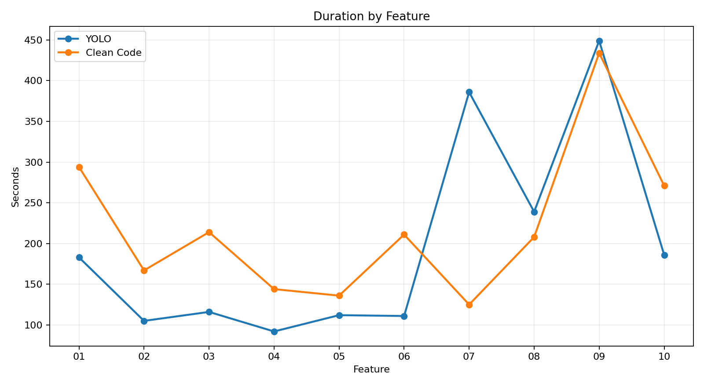
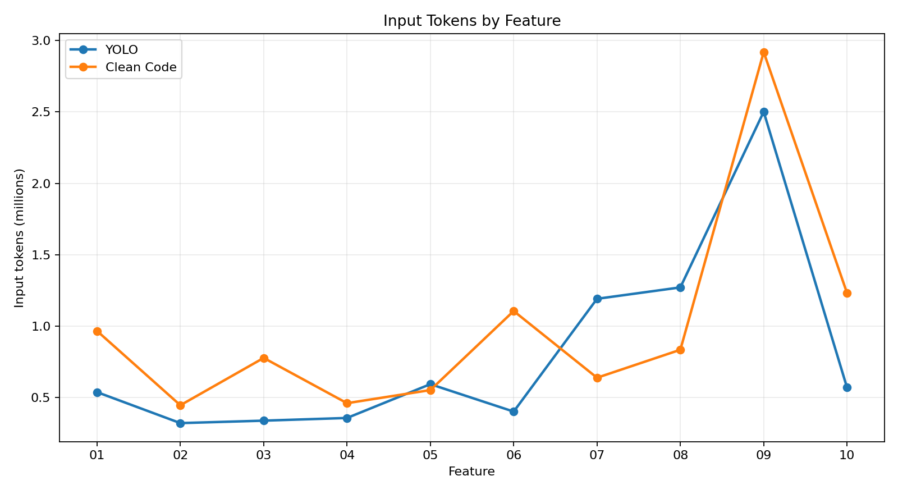
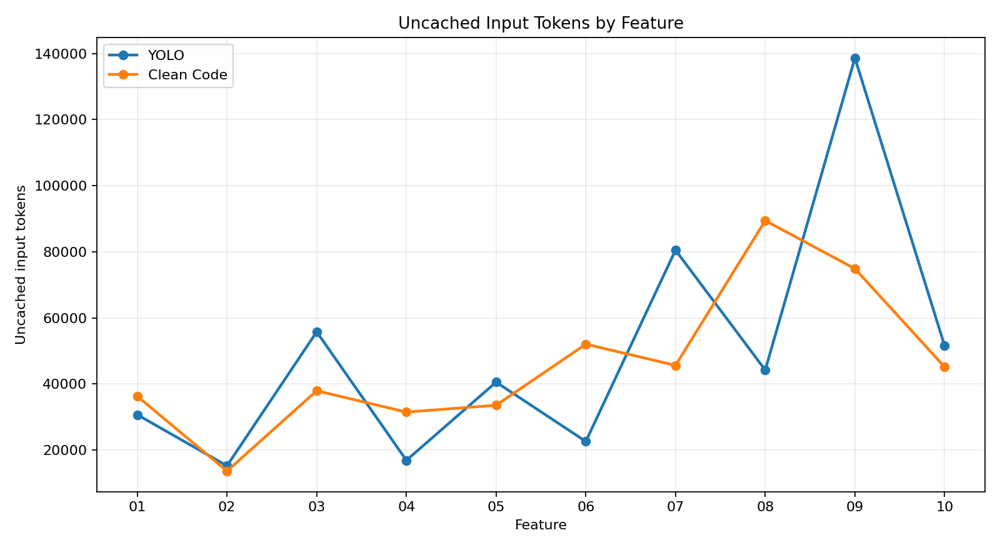
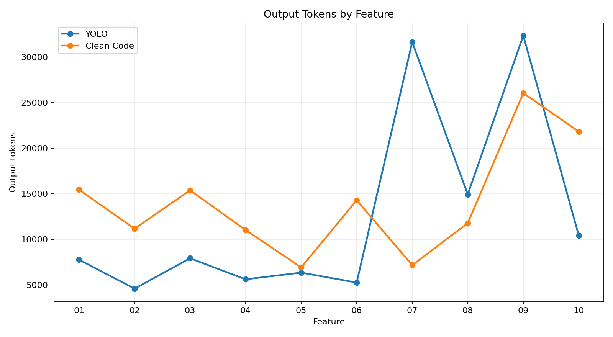
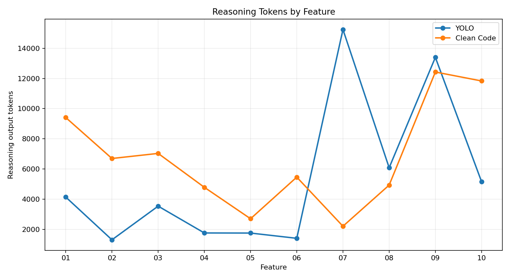
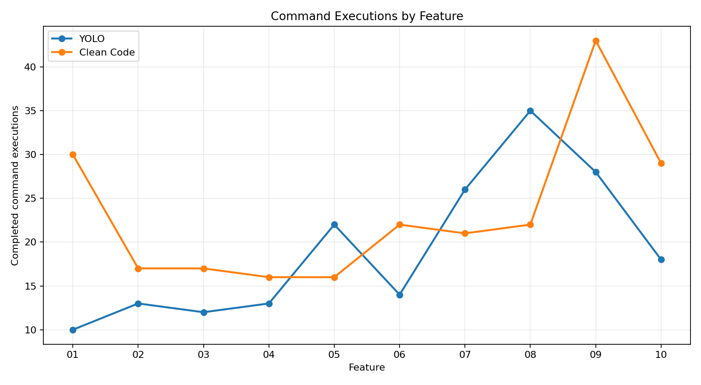
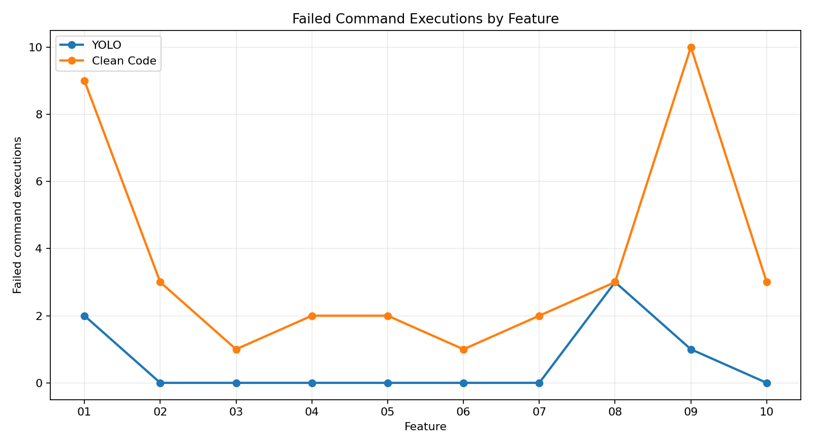
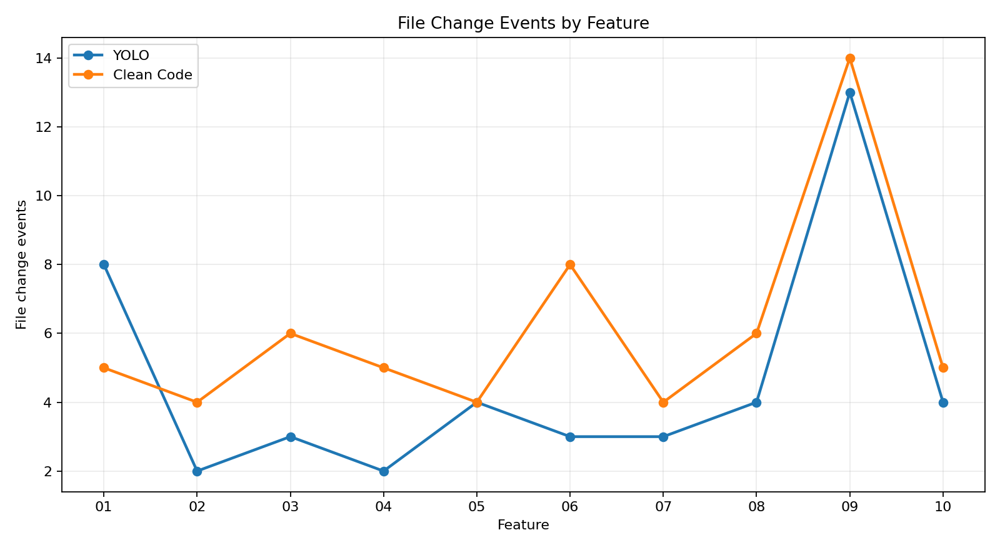
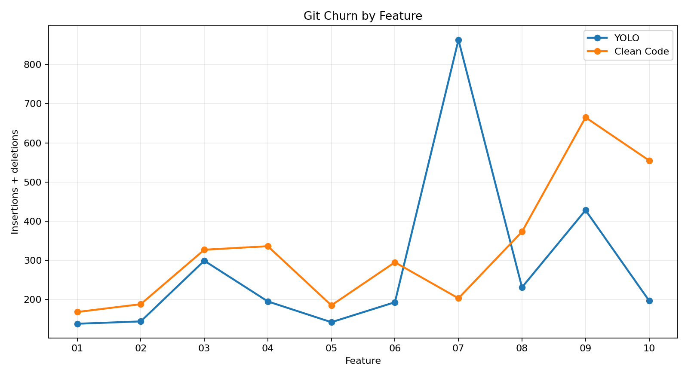
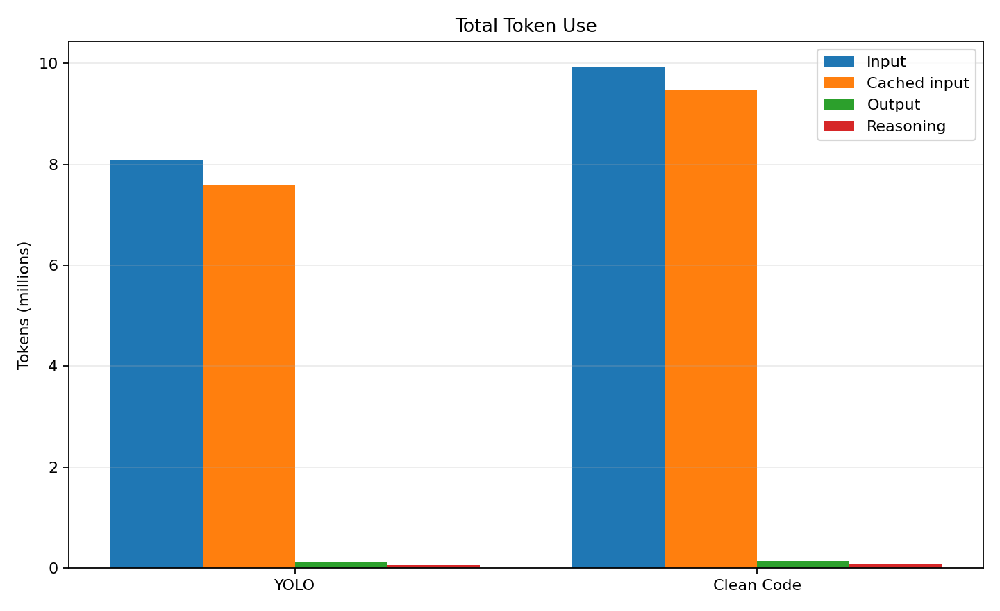
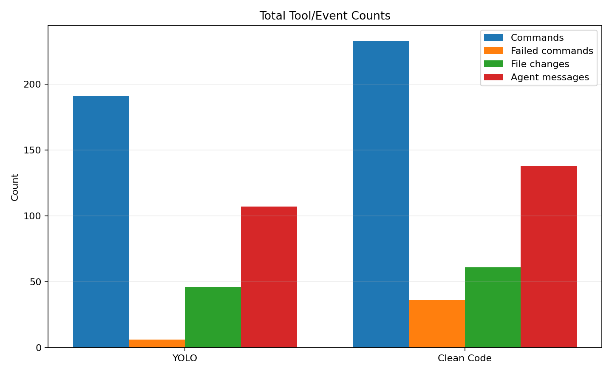
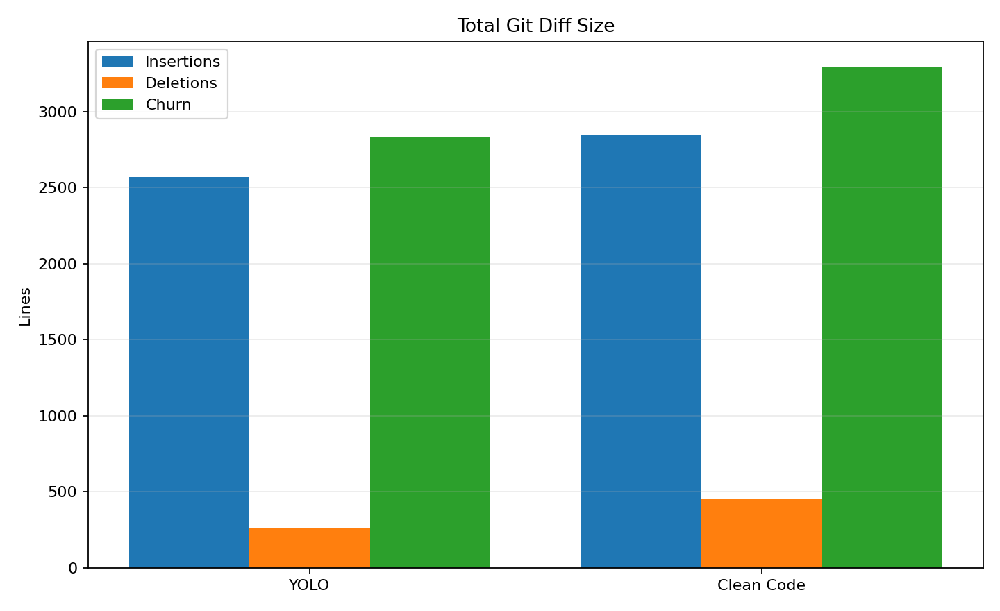
comparison-data.jsonper-feature.csv